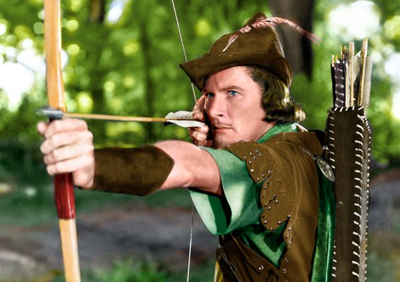
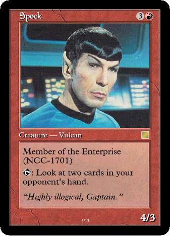

Bienvenidos a Diseño 101, el capítulo uno del aprendizaje del diseño de videojuegos.
Hoy hablaremos sobre lo que considero que es el concepto más importante en relación al diseño de videojuegos. Sorprendentemente, se trata de un tema que rara vez se discute. De hecho, creo que acaba convirtiéndose en la raíz de un montón de desencuentros, quejas y discusiones durante el proceso creativo y de desarrollo.
Todo empieza con una pregunta:
La pregunta
Supongamos que eres el diseñador jefe de un juego de estrategia militar basado en turnos.
Llega la hora de diseñar la mecánica de combate entre las unidades. Juan, un diseñador de tu equipo está intentando convencernos de que el sistema de combate debe ser equilibrado y basarse en elementos aleatorios tales como la tirada de un dado; de forma que las unidades más débiles tengan una oportunidad pequeña, pero significativa, de destruir a las unidades más potentes. Catalina, otra diseñadora de tu equipo, defiende la idea de que el combate sea mucho más rígido y determinista: las unidades más potentes deben derrotar siempre a las unidades débiles.
Juan afirma que su enfoque hará que cada enfrentamiento sea más emocionante. Catalina defiende que los jugadores se frustrarán muchísimo si sus mejores batallones son derrotadas por pelotones débiles, y que esto llevará indefectiblemente a que el juego dé mucho asco.
¿Cuál de los dos enfoques es el válido?
El núcleo de la respuesta (esto también es una pregunta)
Para resolver este dilema debemos preguntarnos: “¿cuál es la experiencia de juego que queremos crear para nuestros jugadores? ¿Qué queremos que sienta el jugador en esta situación?” Y éste es nuestro Objetivo de Diseño.
Decidir entre la sugerencia de Juan o la de Catalina va a resultar imposible sin un Objetivo de Diseño. Es como intentar decidir si es mejor el agua o el vino. ¿En qué contexto? ¿Estamos intentando impresionar a un chico o chica con el que nos hemos citado? ¿Estamos cambiando a de dieta a una más saludable? ¿Buscamos bebidas para una fiesta de alto copete? ¿Estamos rellenando el botellín de nuestra bicicleta? ¿Cuál es nuestro objetivo?
Es un hecho que todas las mecánicas son válidas para DETERMINADO tipo de juego. Cada mecánica genera diferentes sensaciones para el jugador, y éstas deberían apoyar el objetivo de diseño que tengas. El diseño de juegos se parece un poco a la química: primero decides la reacción que quieres provocar en tus jugadores y luego escoges las mecánicas que generan esa reacción. Y sí, si eliges las mecánicas incorrectas… al final todo te va a explotar en la cara.
Cómo aplicar el Objetivo de Diseño
Vamos elegir un objetivo de diseño hipotético para decidir cuál de los dos -Juan o Catalina- tiene razón. Para este juego tu objetivo es: “crear un simulador de guerra de ritmo rápido que se pueda jugar mientras tomas cerveza y patatas fritas, y haga sentir a los jugadores macarras de bar enfurecidos”. Para apoyar este objetivo de diseño, has tomado la decisión de representar las facciones de tu juego con hordas de bárbaros y vikingos sedientos de sangre, en vez de regimientos regulares y disciplinados. Para este tipo de juego no te interesa que los jugadores se enreden con complicados cálculos sobre cuál es la jugada perfecta, sólo quieres que sientan esa emoción basada en la adrenalina sin obligarles a pensar demasiado.
 Afinad bien vuestra puntería, amigos.Es obvio que el enfoque de Juan apoya este objetivo. Hacer que las batallas sean equilibradas e incluso poco predecibles genera emoción, tensión y contraataques electrizantes en contra de todo pronóstico. Hacer que la aleatoriedad sea un factor importante en el resultado del combate, también influye en que la mayoría de jugadores deje de plantearse estrategias a largo plazo: simplemente esperan a ver qué pasa con el primer ataque y en función del resultado ya tomarán la siguiente decisión. Esto aleja nuestra acción de planteamientos deterministas de juegos como el ajedrez.
Por el otro lado, el enfoque de Catalina resultaría desastroso para nuestro juego. Su diseño completamente determinístico implica una experiencia táctica demasiado sesuda, demasiado cercana a jugar al ajedrez. Obliga al jugador a pensar con cuidado cada movimiento e incluso hacer cálculos matemáticos. Todo ello tiende a reducir el impacto emocional de cada momento. Haz la prueba, la próxima vez que te pilles un buen cabreo, intenta multiplicar mentalmente un número de 3 cifras por otro de 2. Verás lo rápido que tu estado emocional se disipa.
¿Pero… esto no era obvio?
Todo parece más fácil a toro pasado, sin embargo, la gente pasa por alto este tema todo el rato… yo, el primero. El otro día estaba haciendo un estudio sobre el juego de “Piedra, papel, tijeras” sin tener demasiado en cuenta el objetivo de diseño, y acabé dándome cuenta de que había sido poco estricto al explicar el tipo de experiencia que quería crear para los jugadores, y por qué “Piedra, papel, tijeras” es un juego incapaz de generar esa experiencia, desde mi punto de vista.
Además, resulta sencillo encorsetarse en una serie de distintos factores que afectan a la experiencia del usuario. Ahora mismo trabajo en un proyecto en el que estoy rediseñando partes significativas de las mecánicas centrales, y me encuentro con dilemas continuamente a la hora de introducir o no determinados factores. La opción “A” sería mejor a la hora de comunicar el tono deseado a través de la jugabilidad y añadiría profundidad estratégica, la opción “B” permitiría intensos combates épicos entre varias facciones guerreras, la opción “C” implica menor gestión por parte del jugador pero no funciona tan bien en los demás aspectos…
…Y es entonces cuando recuerdo que nuestro objetivo de diseño es crear una experiencia estratégica basada en cinemáticas con sensaciones explosivas y viscerales, y que cada partida no se alargue más de 15 minutos. La opción “B” es mala para el objetivo de diseño, la opción “A” no resulta relevante y la opción “C” reduce la gestión del jugador de forma que hace el juego más fluido. Nos quedamos con la “C”.
Un ejemplo reciente
Hace un par de meses estaba haciendo “playtesting” de un mapa uno-contra-uno para un juego de estrategia militar. Ya había jugado muchísimo en modo campaña, de hecho, había empezado a diseñar mi propia misión de tipo campaña… pero era mi primera vez con un mapa del tipo uno-contra-uno. Sin embargo, hay que decir que las mecánicas eran prácticamente idénticas a las del modo de campaña.
Me puse a jugar el mapa… y me dio asco.
"Te voy a hacer un contragambito Volga continuando mi defensa Benoni que lo vas a flipar, chaval."“Es más lento que el caballo del malo de la película,” –protesté al diseñador de la misión,- “durante el primer turno sólo nos hemos dedicado a mover nuestras unidades un poco más cerca de las del enemigo. Hemos perdido diez minutos de nuestras vidas con eso.”
“De acuerdo,” –dijo él- “pero es que la gente que elige este modo disfruta colocando sus unidades con cuidado y posicionándose bien en la primera ronda. Como en el ajedrez, sirve como presagio a la inminente batalla desde un punto de vista táctico, y permite que el jugador optimice el combate a su manera. Está enfocado a un contexto de torneo competitivo.”
“Oh. Así que el uno-contra-uno es el modo ‘Spike’ y la campaña es el modo ‘Timmy’?”
“Exacto.”
“En ese caso, es perfecto.”
Si nunca habéis oído hablar de ellos: Timmy, Johnny y Spike son los tres perfiles de jugador en los que se basa el diseño de juego de “Magic: the Gathering”. Cada nombre representa un tipo distinto de jugador, o una motivación distinta a la hora de jugar. Porque cada uno de ellos disfruta de un tipo de experiencia distinta y, por tanto, cada uno configura su propio objetivo de diseño.
No voy a entrar en detalles, porque muy probablemente muchos de vosotros ya estáis familiarizados con los términos. Si no, hay un artículo que lo explica todo mucho mejor de lo que yo puedo hacerlo. Está lleno de fantástica información, muy útil a la hora de diseñar una gran variedad de juegos.
 "Es... ilógico, Capitán."Resumiendo
Todos pensamos en términos de objetivos de diseño de una manera u otra. Resulta un poco extraño hablar sobre algo que resulta tan evidente, sin embargo, es un error muy común pasar por alto un objetivo de diseño cuando estamos metidos en harina, trabajando en un juego. Puede que no lo hayamos expresado con la claridad suficiente o que no nos hayamos puesto de acuerdo sobre ello, acabando por entrar en discusiones absurdas en las que ni siquiera mencionamos la clave del asunto.
Así que ahí van mis consejos:
- Describe tu objetivo de diseño lo antes posible y de la manera más estricta y específica posible, para cualquier cosa en la que vayas a trabajar. Dedica un día entero a aclararlo lo más posible, si es necesario, y convence a todo el mundo de que ése es el núcleo de vuestra actual empresa. Merece la pena dejar esto muy claro para evitar discusiones posteriores, que consumen precioso tiempo y difuminan el camino correcto a seguir.
- Escribe tu objetivo de diseño en un papel que pegarás a la pantalla de tu ordenador. Esto viene de mis días de escribir teatro. Resulta muy útil recordar el mantra central del trabajo a todas horas.
- Al igual que se necesitan distintos elementos químicos para lograr una reacción determinada, a veces los objetivos de diseño para pequeñas partes de tu trabajo serán distintos a los del plan maestro global. El objetivo de diseño de un nivel en particular puede diferir del objetivo de diseño del juego completo. Por ejemplo, cada capítulo de una aventura gráfica puede tener su propio tono emocional, sin embargo, todos generan una experiencia coherente en conjunto.
- Cuando no seas capaz de decidirte entre distintas posibilidades de diseño del juego, sea un tipo de mecánica, un mapa de nivel, qué textura usar o cualquier otra cosa… tómate un momento para revisar cuál es el objetivo de diseño. Haz memoria, sin importar en qué estés trabajando, y piensa en el resultado que intentas obtener al tomar tu decisión. Te sorprenderá la cantidad de veces que esto soluciona tus problemas.
Después de todo, nuestra labor como diseñadores de juegos consiste en descubrir qué queremos transmitir y cuáles son las decisiones de diseño que generan esa sensación.
Me han dicho que queda muy bien terminar los artículos con una cita, así que ahí va:
“El viento nunca soplará en la dirección adecuada para un hombre que no sabe a qué puerto se dirige.” –Seneca.
Mmm… ¿ha funcionado?
Y de momento, eso es todo...
Si te interesa el diseño de videojuegos y también sientes pasión por el desarrollo de videojuegos, puede que te interese Impact o Phaser, una guía para desarrollar un videojuego de corte 'indie' en tan sólo 72 horas. La versión "full" incluye un documento extra con un análisis en profundidad de las mecánicas del GWBW.
También puede que te interesen nuevos tutoriales como éste. Si quieres que te avise cuando suba nuevos contenidos, sígueme en Twitter.